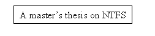
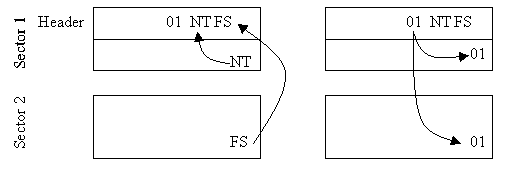
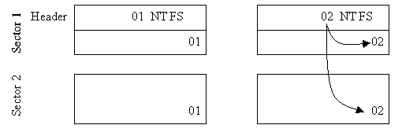
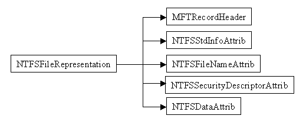
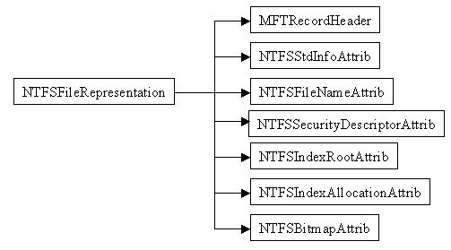

Figure 3.1. The hard disk consists of stacked platters. Each side of a platter is divided into concentric tracks, which in turn is divided into sectors. The picture is taken from [QUA98].
Figure 3.1. The hard disk consists of stacked platters. Each side of a platter is divided into concentric tracks, which in turn is divided into sectors. The picture is taken from [QUA98].
Bertil Lindvall
Department of Information Technology
Institute of technology
Lund
Sweden
Patrik Bannura
Axis Communications AB
Lund
Sweden
1 Table of contents
1 Table of contents
2 Introduction 2.1 Background 2.2 Goal 2.3 Related works 2.4 Report overview
4 File systems
4.1 File allocation
4.2 List of files
5 NTFS 5.1 Capabilities 5.2 History 5.3 Future 5.4 Master File Table 5.4.1 Metadata files 5.5 Master File Table file records 5.5.1 Attributes 5.5.2 Runs 5.5.3 Extension file records 5.5.4 Names 5.5.5 MS-DOS file names 5.6 Directories 5.7 Logging 5.7.1 Transaction 5.7.2 $LogFile 5.7.2.1 Transaction records 5.7.2.2 Tables 5.8 Consistency checks 5.9 Compression 5.9.1 Compression engine 4 5.10 Security model 5.10.1 Security identifier 5.10.2 Access token 5.10.3 Security descriptor 5.11 Multiple data streams
6 Performance 6.1 Disk utilisation 6.2 Fragmentation
7 Implementation
7.1 Environment
7.2 Design
7.3 Different operations on the file system
7.3.1 Listing a directory
7.3.2 Reading a data file
7.3.3 Writing to a data file
7.3.4 Extending a data file
7.3.5 Creating a data file
7.3.6 Creating a directory
7.3.7 Deleting a file
8 Improvements and future development 8.1 Efficiency 8.2 Security model 8.3 Transactional logging 8.4 MS-DOS file names 8.5 Large directories 8.6 More improvements
1 Appendix: MFT record structure
1.1 MFT (Master File Table)
1.2 File reference
1.3 Master File Table file record header
1.4 Sequence of attributes
1.5 Attribute header
1.6 Attribute value
1.7 Run-list
2 Appendix: System defined attributes structure 2.1 $STANDARD_INFORMATION 2.2 $ATTRIBUTE_LIST 2.3 $FILE_NAME 2.4 $VOLUME_VERSION 2.5 $SECURITY_DESCRIPTOR 2.5.1 Security descriptor header 2.5.2 Access Control List (ACL) 2.5.3 Access Control Entry (ACE) 2.5.4 Security Identifier (SID) 2.6 $VOLUME_NAME 2.7 $VOLUME_INFORMATION 2.8 $DATA 2.9 $INDEX_ROOT 2.10 $INDEX_ALLOCATION 2.11 $BITMAP 2.12 $SYMBOLIC_LINK 2.13 $EA_INFORMATION 2.14 $EA
3 Appendix: Metadata file data structure 3.1 $MFT 3.2 $MFTMirr 3.3 $LogFile 3.3.1 Restart buffer 3.3.2 Log buffer 3.3.3 Transaction records 3.4 $Volume 3.5 $AttrDef 3.6 . (root directory) 3.7 $Bitmap 3.8 $BadClus 3.9 $Boot 3.10 $Quota 3.11 $UpCase
2 Introduction
2.1 Background
NTFS (New Technology File System) is one of the file systems that can be used by Windows NT. It has some advantages over the other file systems, it is possible: to recover the file system in case of system failure, to compress individual files, to have large disks and a number of other features. The problem with NTFS is that there is no comprehensive documentation of it, so it is currently only supported by Windows NT.
Axis Communications AB, called Axis further on, was founded in 1984 and develops products that can be connected to a network. One of these products is the StorPoint HD Jaz-server; others are print servers, camera servers, CD servers and scan servers. The StorPoint HD currently supports the FAT and UDF file systems. The advantages that NTFS has over other file systems makes it interesting for Axis to see if it is possible gather enough information on NTFS to add NTFS support in the StorPoint HD.
2.2 Goal
The object of this thesis is to find out how NTFS works, to explore the disk structures and try to implement a NTFS driver in Axis’ file system framework. Some attention will also be paid to the advantages and disadvantages that NTFS has over other file systems.
2.3 Related works
Windows NT is currently (November 1998) the only operating system that has full NTFS support. There are various other projects that have some support for NTFS, most commonly known is probably the Linux-NTFS project [LÖW97] and the NTFSDOS driver [R&C96]. Both implementations do currently only support read operations to disk. The people in the Linux-NTFS project are working on write support, but it seems like there are not much happening right now. The NTFSDOS driver will, according to the people behind it, never be upgraded with write support. There may be other projects doing the same thing, but these are the two that I have come across.
As far as documentation H. Custer [CUS94] provides a good overview of the NTFS explaining the basic structures. R. Duchesne [DUC98] and M. von Löwis [LÖWIS] have more in-depth although not complete description of the disk structure. R. Duchesne has based his work on M. von Löwis’ work, some parts have been updated and others have been left out. A large collection of related documents exist on the WWW, but no one has a complete description of NTFS.
2.4 Report overview
This report is structured so that it first introduces the basics of a hard disk drive and a file system. Then a description of NTFS based principally on previously available documentation, complemented with my own research, follows. This description is freed from details on the byte level, which can be found in the appendixes. Following this is a brief description of my implementation, what conclusions I have made and a little bit about the future. At the end the appendixes, with detailed descriptions of the disk structure of NTFS, can be found.
3 Hard disk
A hard disk is basically a number of stacked platters, see figure 3.1. The spindle motor makes all the platters spin simultaneously. Each platter is magnetised on both sides and each side has its own reading head. The platters are divided into concentric tracks (see figure 3.1), enumerated from zero at the edge. Normal modern hard disks have several thousand tracks per platter. Each track is divided into a couple of hundred small chunks of data called sectors (see figure 3.1), usually 512 bytes large. [HDD98]
Figure 3.1. The hard disk consists of stacked platters. Each side of a platter is divided into concentric tracks, which in turn is divided into sectors. The picture is taken from [QUA98].
File systems access hard disk by addressing a certain cluster. With older file systems the size of the cluster was determined by limitations in the number of possible addresses. Currently the cluster size is chosen on a performance basis. A cluster is normally somewhere between one and hundred sectors, but they can be larger. So even if you just want to get a single byte from the hard disk drive, you need to read a complete cluster. [HDD98]
The heads move as a unit and the set of tracks that can be read without moving the heads is called a cylinder. When we look at the hard disk from the file system point of view we see a sequence of sectors, so we do not actually have to bother with cylinders and tracks. The sequence of sectors are built like this: first put all the sectors in a track in sequence, then put all the tracks in a cylinder in sequence and last put adjacent cylinders in sequence. [RIN981]
Data on the hard disk is stored as magnetic pulses. The conversion between the magnetic pulses and a stream of digital ones and zeroes is the job of the hard disk drive controller. The computer communicates with the hard disk drive through one of two available interfaces: IDE (with variants as EIDE) and SCSI. [HDD98]
SCSI is not just an interface to a hard disk drive. It is actually a smart bus controlled by a microprocessor. It is possible to attach other devices such as printers and scanners to the SCSI bus. The IDE interface just supports two hard disk drives, while SCIS allows up to seven devices. EIDE is an extension of IDE with support for CD-ROM and tape drivers. [KNO98]
4 File systems
The data that we want to store on the hard disk drive is divided into files. This is done by the user or by the operating system. Most systems that do this let the user organise the files in a tree structure with directories, where a directory can hold a set of files or other directories.
Our task is to organise these files in a way so that they can be retrieved safe and fast. We can’t just scatter the data all over the disk and hope that we will find it again. There are two tasks to take on, first we need to find the beginning of a file and then we need to find the content of the file.
4.1 File allocation
There are several different ways to layout out the content of a file on the disk. We can use: [RIN982]
 Figure 4.1Contiguous allocated file. Blocks are allocated contiguously. In this simplified picture each word corresponds to a block on disk.
In the linked list layout, the file is divided into blocks and each block has a pointer to the next block, see figure 4.2. The list of files only needs to know the location of the first block of each file. This layout makes is neat to increase or decrease the size of a file. On the other hand, if we want to read one byte in at the end of the file we need to walk through all the blocks before we find the requested byte, and if one pointer gets corrupt the reminder of the file is lost. [RIN982]
 Figure 4.2 Linked list allocated file. Each cluster contains a pointer to the next cluster in the sequence. In this simplified picture each word corresponds to a block on disk.
Figure 4.2 Linked list allocated file. Each cluster contains a pointer to the next cluster in the sequence. In this simplified picture each word corresponds to a block on disk.
The indexed allocation approach works pretty much like the linked list layout. The difference is that each block has an entry in a table with a pointer to the next block in the sequence, see figure 4.3. This layout still has the problem with the pointers, but if we can keep the entire table in memory we need not make a read operation to disk for every pointer. This is the approach used by FAT, the file system that is used by Windows 95 and can be used by Windows NT. [RIN982]

Figure 4.3 Indexed allocated file. Each entry in the table contains a reference to the next cluster. A zero reference indicates the end of the file. In this simplified picture each word corresponds to a block on disk.
The last method uses a table of inodes. An inode contains a set of pointers, which can point to data blocks or to another set of pointers, see figure 4.4 for a simplified example of the first case. The layout is used by Unix and is the base for NTFS. [RIN982]

Figure 4.4 Inode allocated file. The inode contains a list of pointers (P) to the different clusters on disk. In this simplified picture each word corresponds to a block on disk.
4.2 List of files
In all case above we need some way to find the first part of the file or the index for the file. Pointers to these can be stored in a list of files. This list of files also needs to be stored somewhere on the disk. For this task we basically have the same choices as when allocating the content of a file: contiguous, linked list, indexed and inode. [RIN982]
5 NTFS
5.1 Capabilities
From the user’s point of view NTFS offers a set of new services:
5.3 Future
A new version of NTFS will be released with the forthcoming Windows 2000 [MIC982] (previously known as Windows NT 5). [RUS98Ja] This new release of NTFS will include:
5.4 Master File Table
The key building block in NTFS is the file. NTFS has no hidden sectors with system data like FAT; thus every property of the file system is stored in some file on the hard disk drive. Files containing such file system data are called metadata files. [RUS98Ja]
All files (metadata, data files and directories) are stored in fixed-size Master File Table file records in the Master File Table (MFT). The MFT resembles an array of MFT file records and is ideally stored near the start of the disk. A copy of the four first, most important, MFT file records is stored in a mirrored MFT near the logical center of the disk. If the MFT for some reason is unreadable NTFS can use its mirrored MFT. As files are created the MFT grows to hold these new MFT file records. When files are deleted the MFT does not shrink again, and clusters allocated for the MFT remains reserved. These clusters can only be filled with new MFT file records in the future. [RUS98Ja]
When you format a disk the MFT just contains the eleven metadata files in its first eleven MFT file records. Data files and directories later created are stored MFT file records following these first eleven. When the MFT grows so large that it no longer can be stored in a contiguous area on the disk, it is stored as two (or more) fragments and is said to be fragmented. Fragmentation of the MFT can easily ruin the performace of the file system. The reading heads may need to move from one area of the disk to another when accessing the MFT and that takes time, especially when the MFT consists of many fragments. To avoid fragmentation of the MFT, an area of the disk is reserved for the MFT. Other files can not be located in this MFT-Zone. As the disk space starts running out NTFS decreases the size of the MFT-Zone allowing other files to use the disk space near the MFT, which increases the risk for fragmentation. Fragmentation of the MFT is a particularly bad, since defragmentation tools are not allowed to defragment the MFT. A fragmented MFT will remain fragmented until the file system is reformatted. [RUS98Ja]
5.4.1 Metadata files
These metadata files are stored in the root directory just like any other file, but they are invisible to the user. Eleven metadata files (see table 5.1) are used to completely describe a NTFS volume. [RUS98Ja] The description of the disk structure of these metadata files can be found in appendix 3.
Table 5.1 The eleven metadata files in NTFS. These metadata files completely describes a NTFS volume. [RUS98Ja]
| MFT file record number | Corresponding file name | Description |
| 0 | $MFT | A pointer to the MFT. Holds among other things the size of the MFT. |
| 1 | $MFTMirr | Copy of the first four MFT file records of the MFT. |
| 2 | $LogFile | Transactional logging file used to recover the file system after sytem failure. |
| 3 | $Volume | Contains volume serial number, creation time and dirty flag. |
| 4 | $AttrDef | MFT file record attribute definitions |
| 5 | . | Root directory |
| 6 | $Bitmap | A map over the used clusters on the drive. |
| 7 | $Boot | Reference to the boot record of the drive. |
| 8 | $BadClus | Lists the bad clusters on the drive. |
| 9 | $Quota | Will contain user quota information, but is unused before NT 5. |
| A | $UpCase | Maps lowercase characters to their uppercase version, used when inserting files in a directory. |
Table 5.2 Simplified structure of a MFT file record
| Header |
| Attribute |
| Attribute |
| Attribute |
| Attribute |
| End marker |
Table 5.3. The fourteen system-defined attributes in NTFS. [DUC98 /attribute.html]
| Type code | Attribute name | Description |
| 10 | $STANDARD_INFORMATION | Contains timestamps for the time when the file was created, last modified and last access. Also holds a flag telling if it is a directory, if the file is read-only, if it should be hidden and all the other traditional MS-DOS attributes. [DUC98 /standard.html] |
| 20 | $ATTRIBUTE_LIST | This attribute is used to find the extension file record and to see what attributes are stored in it when all attributes cannot fit into one file record. It is very rarely used and is mostly observed in heavily fragmented files. [CUS94, 23] |
| 30 | $FILE_NAME | Holds the file name of the file record. A file record can have multiple file name attributes to support MS-DOS based file names. [CUS94, 23] |
| 40 | $VOLUME_VERSION | This have I not ever encountered, [DUC98 /volumever.html] states that it could have something to do with what version of NTFS that created the volume. |
| 50 | $SECURITY_DESCRIPTOR | Holds information on: who owns the file, who can access it and what the different users can do with it. [CUS94, 23] |
| 60 | $VOLUME_NAME | Just the name of the volume. [DUC98 /volumename.html] |
| 70 | $VOLUME_INFORMATION | Stores the volume dirty flag. [DUC98 /volumeinf.html] |
| 80 | $DATA | The usual content of a data file. [DUC98 /data.html] |
| 90 | $INDEX_ROOT | These three attributes together store the content of a directory. [CUS94, 23] |
| a0 | $INDEX_ALLOCATION | |
| b0 | $BITMAP | |
| c0 | $SYMBOLIC_LINK | Unused. [RUS98Ja] |
| d0 | $EA_INFORMATION | Used to implement HPFS style extended attribute for OS/2 subsystems and for OS/2 clients of Windows NT file servers. [CUS94, 23] |
| e0 | $EA
|
Table 5.4 The structure of an attribute.
| Attribute header |
| Attribute data |
5.5.3 Extension file records
Even when NTFS has made all possible attributes non-resident it sometimes happens that the sequence of attribute still can not be squeezed into one single file record. NTFS then has to use two or more file records to represent the file, directory or whatever it may be. The original file record is called base file record and contains some of the attributes plus an attribute list attribute. This attribute has a file reference to the newly created extension file record and tells in which file record the different attributes are stored. The creation of an extension file record is seldom used and is mostly encountered when a file is heavily fragmented and the run-list contains a large number of runs, but it can also be encountered in the case when a file contains many data streams. (See chapter 5.11 for a explanation of data streams.) [CUS94, 27-28]
5.5.4 Names
The attribute header can contain an optional name. This name is used to support named data streams. It is for example possible that a file record has two data attributes with different names each representing a data stream. It is important to note the difference between the name of an attribute and the attribute name. The attribute name is common for all attributes of the same type, the name of an attribute is used to distinguish attributes of the same type in a MFT file record. [CUS94, 16, 22]
5.5.5 MS-DOS file names
File names created by NTFS can be longer than MS-DOS based file names and can contain characters not supported by MS-DOS. MS-DOS is still allowed to access NTFS formatted drives. To make the file names not supported by MS-DOS visible to MS-DOS an extra file name attribute is created whenever the original file name is not a valid MS-DOS file name. [CUS94, 69]
NTFS follows four steps when creating a valid MS-DOS name from a non-valid: [CUS94, 71]
For a directory containing only a few files (or subdirectories) the index root attribute can store all the information about the directory and no index buffers is needed. If the index root attribute grows larger and the sequence of attributes no longer fits into the MFT file record, NTFS allocates an index buffer on the disk. Figure 5.1 shows how a fairly large directory could look like.

Figure 5.1 Simplified structure of a fairly large directory. Files are sorted by file name. The END marker shows the end of a buffer.
In the current version of NTFS it is only possible to sort files based on the file name. NTFS is designed so future versions can sort on other keys or even have the directories sorted on multiple keys. We would only have to add another stream to the index attributes. The current alphabetically sorted stream is named $I30 and all index attribute are named $I30.
5.7 Logging
NTFS is what you can call a transactional file system. Each change of the file system is a transaction that can be divided into a set of suboperations. If you for example extend a file, you will need to update both the length and the last modified time (among other things). NTFS uses the transactional logging metadata file, $LogFile, to keep track of all transactions. If the whole transaction is not completed, due a system failure, the file system will be left in an undefined state. On reboot the changes can be redone or undone, depending on how much of the transaction that was completed. [THA]
5.7.1 Transaction
Each transaction can be divided into four steps: [THA]
The first time the volume is used after a system reboot the logging mechanism checks if the last operation was completed. If this is not the case the file system needs to be recovered. The first step is to redo the suboperations in the log file that were not carried out on the actual file system. NTFS then checks if this completes the transaction. If not the undo data is used to put the file system in the state is was before the transaction. [CUS94, 39-40]
The logging mechanism only bothers with suboperations that have to be redone or undone to restore the volume to a defined state and does it not bother about user data. This decision was made to reduce the impact logging has on performance since too much logging would make the file system slow. [CUS94, 33]
5.7.2 $LogFile
The log file data consists of two main structures (see table 5.5): the restart area and the logging area. The restart area contains information on how to start the recovery after a system failure and the information needed to recover the file system is stored in the logging area.
Table 5.5 The structure of the log file.
| Restart area | Restart buffer 1 | Describes the completion of the last transaction |
| Restart buffer 2 | Describes the last suboperation | |
| Log buffer 1 | ||
| Log buffer 2 | ||
| Logging area | Log buffer 1 | |
| Log buffer 2 | ||
| ... |
The logging area holds the transaction records needed for file system recovery. [CUS94, 39] It is divided into buffers. Each buffer starts with a log buffer header, that among other things tell us how much of this buffer that is used and provides the consistency checks. When all these buffers are filled with log data the logging area starts recording new log data from the beginning of the buffers again. The logging area can therefore be though of as circular and virtually infinitive.
5.7.2.1 Transaction records
NTFS uses several different records to store the log data. [CUS94, 40] Logical sequence numbers (LSN) are used to identify the transaction records. How this numbers are calculated is currently unknown, but they are always increased for each write to the log file.
The update records store the redo and undo data for each suboperation. The redo data tells how to reapply the data to the volume and the undo data tells how to roll back the suboperation. The update records contains pointers to the previous update record (via LSN) which are used to find the previous update record when undoing a not completed transaction. [CUS94, 40-41]
A number (how many depends on what transaction) of update records are created for each of the following transactions: [CUS94, 42]
Checkpoint records are periodically written to the $LogFile. The checkpoint records knows how far back the in the $LogFile a recovery of the file system must start. The LSN of the most recent checkpoint record is stored in the restart area for quick access upon recovery. [CUS94, 42] Other things stored in the checkpoint records are the LSN of the transaction table and the dirty page table. [CUS94, 44]
A transaction committed is written to the log file when a transaction is completely written to disk and there is no longer any need to use the update records for recovery. [CUS94, 41]
5.7.2.2 Tables
A couple of table are written to the $LogFile on each write of a checkpoint record. These tables as used when recovering a file system. The transaction table keeps track of the transactions that have been started but that have not yet been committed. The dirty page table keeps track of what pages in the cache that contains modifications to the file system structure that have not been written to disk yet. [CUS94, 44]
5.8 Consistency checks
To ensure that a cluster is ok, NTFS uses two different consistency checks to protect its most important structures, see table 5.6.
Table 5.6 Structures protected by consistency checks and their magic number identifiers.
| Structure | Magic number identifier |
| Master File Table file records | FILE |
| Index buffers | INDX |
| Restart buffers | RSTR |
| Log buffers | RCRD |
The first check is that they all have a magic number identifier at the beginning of their disk structure. A magic number identifier is a four-byte sequence that is common to all structures of the same kind.
The second check is the fixup technique. A fixup pattern is a word (two bytes) written at the end of all sectors belonging to a disk structure. When the structure is read the fixup pattern at the end of each sector is compared to the one stored in the header of the structure. If they are equal NTFS accepts the structure as valid and replaces the fixup pattern at the end of the sectors with the original value, stored in the structure header, before processing the rest of the data. The next time data is written to the structure the fixup pattern is increased by one, the values at the end of each sector are stored in the structure header and are replaced by the fixup pattern. [DUC98 /fixup.html]
This is maybe best explained by an example:

Figure 5.2 Adding fixups to a selection of the disk. The selection contains NT and FS at the end of each sector. These characters are replaced by the fixup 01.
Imagine that we have a selection of the disk protected by fixups. The selection spans over two sectors. The first sector ends with the characters ‘NT’ and the second with ‘FS’. When allocating the selection to a file the fixup pattern is set to 1. The header part of the selection will store this fixup pattern and the characters ‘NTFS’. At the end of both sectors the fixup pattern 1 will be found. This operation can be viewed in figure 5.2.

Figure 5.3 Checking fixups in a selection of the disk. If the fixup pattern is found at the end of each sector the fixups are increased.
Next time the selection is accessed the fixups are checked to see if the sectors not have been damaged. If a 1 is found at the end of the sectors they are replaced by ‘NT’ and ‘FS’ before passing the data on to the rest of the system. On disk the fixup pattern is increased to 2 both in the header and at the end of each sector. This operation can be viewed in figure 5.3.
5.9 Compression
NTFS enables compression of individual data streams. [RUS98Ja] The code or algorithm that does the compression is called the compression engine. The compression engine is made as an exchangeable unit to make it possible to exchange it as new and better compressions see the day. [CUS94, 66]. The current version of the compression engine is four [DUC98 /attribute.html] and it is based on the LZ77 algorithm [DUC98 /engine.html]. The strategy of the LZ77 algorithm is to replace repeated substrings with a reference to the first substring. [DUC98 /engine.html]
When compressing data NTFS divides the data into 16 clusters long compression units. Since the cluster is the smallest allocation unit on the disk, compression is only applied if we can save at least one cluster. [CUS94, 64] Compressed data is detected by looking at the compressed flag in the attribute header. Compressed clusters are identified by the fact that there are clusters with the offset zero in the run-list. If the run-list contains one run with offset 10 and length 14 and then the next run has offset 0 and length 2 we can conclude that the compression unit could be compressed by 2 clusters. [DUC98 /runlist.html]
If a complete compression unit consists of only zeroes it can be completely compressed. The run-list then has a run with offset 0 and length 16, saying that the unit was totally compressed. If two compression units in a row consists of only zeroes the run can be set to offset 0 and length 32 and in the case where a unit of only zeroes follows a unit that was compressed normally we can observe something like table 5.7. [DUC98 /runlist.html]
Table 5.7. Example of compressed run-list. The file consists of 32 clusters. The first 16 were compressed to 14 and the last 16 were completely compressed.
| Offset | Length | |
| First run | 10 | 14 |
| Second run | 0 | 18 |
5.9.1 Compression engine 4
The current compression engine uses 4 KB sized compression windows that are compressed individually. [CUS94, 46] The engine tries to find multiple occurrences of substrings in a window. When it finds such one it replace the later one with a reference to the previous occurrence of the substring.
The compressed data is divided into eight position long blocks. Each position can either be a back reference (which takes two bytes) or normal byte. The block starts with a back reference identifier byte telling if there are any references within the block. The least significant bit of this back reference identifier byte corresponds to the first position of the block and the most significant bit corresponds to the last position of the block. If the back reference identifier byte for example is 0x40 you can tell that there is a back reference in the seventh position of the block. [DUC98 /engine.html]
The back reference consists of an offset value and a length value. To make the algorithm more efficient is the size of the fields is dynamically changed during compression and decompression. As the engine advances through the window the length is decreased and the offset is increased, since at the end of the compression offsets can be very large. Lengths are usually not so large but to allow as large lengths as possible the maximum number of bits are always used for the length field. At the beginning of the block the offset field is only four bits and at the end the offset is twelve bytes. The length field size is of course always sixteen minus the length of the offset field. [DUC98 /engine.html]
The offset value stored on disk is actually not the real offset. All offsets are counted positive, and since the minimum offset that can be used is one, one is subtracted from the offset. Since a back reference is two bytes it makes no sense to replace strings that are shorter than three bytes with a back reference. That would consume more space than it saves. We now know that the length value is at least three so we can save some space subtracting three from the length value. So if we have a back reference to a string that was read 10 bytes back and had the length 4 the compression engine stores this as an offset of 9 bytes and a length of 1 byte. [DUC98 /engine.html]
5.10 Security model
The security model in NTFS is derived directly from the Windows NT object model. Each MFT file record has a security descriptor depicts the security setting for the object (file or directory). The Windows NT security system uses this information to allow or deny a process access to an object. [CUS94, 5]
5.10.1 Security identifier
A security identifier (SID) is a variable-length numeric value that is used to identify entities that perform actions in a system. The SID contains: [RUS98M]
The SACL is constructed the same way as the DACL. The SACL specifies what which actions by a particular user that will cause NT to write audit events to the security log. Auditing is a way of logging some chosen actions taken on an object by some particular user or users. The ACEs tell whether Windows NT should log successes or failures.
Storing the security information in the $SECURITY_DESCRIPTOR is what makes it possible for NTFSDOS and Linux-NTFS to read files on a NTFS drive. These two implementations just ignore the security information and the reads the other attributes from the disk.
5.11 Multiple data streams
NTFS supports the use of multiple data streams. A data stream is equivalent to a named data part. A file containing multiple data streams, thus has more than one data part and the individual data.
In NTFS data streams are named data attributes added to a file. The data streams are accessed by :-notation. To view the content of the data stream stream1 stored in the data file file1, open the file named file1:stream1. The ordinary data attribute can be seen as an unnamed data stream, and since it is the default data stream of a file no :-notation is needed to access it. Not only data files can have additional data streams; directory files can also contain information in such streams. [MAR98]
The most common usage of streams is when connecting a Macintosh computer to a NTFS file system through the Appleshare protocol. Files on a Macintosh consist of two components called forks. The data fork holds the data and the resource fork holds additional information on the file. When storing Macintosh files on a NTFS drive the data fork is stored in the ordinary unnamed data attribute. The resource fork is divided into the two data streams Afp_resource and Afp_AfpInfo. [NELSON]
Other things to be noted when looking at NTFS multiple data streams are:
NTFS allows clusters to be smaller than they for example are in FAT, which should result in more efficient usage of the disk. On the other hand, NTFS requires quite a lot of overhead (the log file and all redundant data) resulting in that an almost empty disk will have a really bad disk usage. It is generally said that FAT is more efficient for smaller drives and that NTFS is the best as drives groves larger and the FAT cluster size grows.
6.2 Fragmentation
That something is fragmented means that it is broken into parts that are detached, isolated or incomplete. A hard disk can suffer from two types of fragmentation: file fragmentation and free space fragmentation. File fragmentation means that files are not stored in a contiguous are on the disk, but are scattered of the disk. Free space fragmentation is a state when the free space on the disk is broken into scattered part rather than being collected in one big empty space. File fragmentation has a direct affect on file system performance. Free space fragmentation has no direct affect on the file system performance, but it increases the risk for file fragmentation when new files are created. [EXE95]
If the entire content of a file that consist of at least two fragments shall be read the reading heads has to be moved from the one fragment to the next fragment. This takes time, and reading the file will seem slow. One file having two fragments is not a problem. The problem comes when many files consists of many fragments, then the wasted time due to moving the reading heads become noticeable and the system feels slow.
When NTFS was released Microsoft claimed that a NTFS drive would never get fragmented. Time has shown that this is not true at all. NTFS drives do get fragmented. The most efficient way to reduce fragmentation on a NTFS is simply to run a defragmentation program regularly. The defragmentation tool move files other areas on disk where they can be stored in a contiguously.
One thing that is really bad is if the Master File Table becomes fragmented. This table is the heart on NTFS and is accessed for almost every disk access. A fragmented MFT has a great impact on file system performance. The really bad thing is that defragmentation tools are not allowed to defragment the MFT.
Keeping a low fragmentation level in a file system is an important goal when implementing one. The problem is that there are not many ways of doing so. Larger clusters obviously sets a limit to how many fragments a file can consist of [JEN], but it also reduces the disk utilisation.
7 Implementation
The main part of this thesis was to verify my documentation of NTFS by implementing a driver in AXIS file system framework. My first approach was to implement a very limited read-only driver and then adding functionality as my work went on. At this stage the Linux-NTFS documentation proved to be very useful as the people behind it have succeeded to write a read-only driver. When my read only driver was working I started the task to write a write-capable driver. My focus has been on creating a working NTFS implementation to verify my documentation not making it as efficient as possible.
7.1 Environment
My NTFS driver is implemented in the simulated environment of AXIS StorPoint HD, where the HD is accessed over the network via CIFS. The simulation of the StorPoint makes it possible to debug the code in an easier manner. My code is based upon the StorPoint code base including AXIS file system framework. The code base is written in C++, so my implementation is also written in C++. The functionality that takes care of the reading from and writing to the hard disk (via a cache) is included in this code base. It also has an implementation of CIFS, which is a way of accessing files over a network. My work was to implement the parts between CIFS and the hard disk interface. This further simplified by the file system framework. The framework is basically a set of classes that is written to provide the basic functionality of a filesystem. (Those not familiar with object oriented programming and its terminology are encouraged to study [HOLM92].) Different implementations inherit and specialise this set of classes. This makes it possible to focus on the file system specific issues, but it demands that the different file system implementations are designed a certain way.
7.2 Design
Since I choose to implement the file system framework there was not so much need to make an overall design of my implementation. Figure 7.1 gives a somewhat simplified overview of my specialisation in which the classes not specialised by in my implementation are left out. A partition on the hard disk represented by a Volume. The Volume contains many File:s of different kinds. A File can either be a DataFile or a DirectoryFile. DirectoryFile:s can contain more DataFile:s and other DirectoryFiles. DataFile and DirectoryFile provide an interface to the rest of the file system framework showing what operations that can be done on a data file respective a directory. All files have a FileRepresentation that is the interface to the structure on disk. As a help to find different files in a directory the class FileIterator is implemented. NTFS specific implementations were written for these classes. Only the design of NTFSFileRepresentation is described in detail since the other classes are quite simple, just calling different operations in NTFSFileRepresentation.

Figure 7.1 The NTFS specialisation of the file system framework. All classes beginning with NTFS is part of the NTFS specialisation.
The class NTFSFileRepresentation represents the MFT file record. To provide an easy way to access the information in the MFT file record header and the different classed I chose to implement one class for the MFT file record header, MFTRecordHeader, and one for each of the attributes:

Figure 7.2. Class diagram for an ordinary data file in the NTFS implementation.

Figure 7.3. Class diagram for a fairly large directory in the NTFS implementation.
$VOLUME_VERSION, $VOLUME_NAME, $VOLUME_INFORMATION, $SYMBOLIC_LINK, $EA_INFORMATION and $EA were not implemented as they were not needed to support the most basic functionality. In case they were encountered in a MFT file record they were just ignored by the read-only version and rewritten unchanged by the write-capable version.
The attributes that could be both resident and non-resident were subclassed by a resident implementation and a non-resident implementation. This provided the rest of the implementation with one single interface to each attribute type and it need not bother whether the attribute is resident or non-resident when accessing the information in the attribute. Every attribute has an attribute header class, NTFSResidentAttributeHeader or NTFSNonResidentAttributeHeader, that holds the attribute header data. The NTFSDataAttrib works this way, figure 7.4 shows how this attribute is structured.

Figure 7.4. Class diagram for NTFSDataAttrib. NTFSDataAttrib is subclassed by NTFSResidentDataAttrib and NTFSNonResidentDataAttrib.
The directory structure is more complex so here NTFSFileRepresentation needs more control over the attributes. It has to keep track of the directory entries in both NTFSIndexRootAttrib and NTFSIndexAllocationAttrib and also the bitmap in the NTFSBitmapAttrib. To make this as simple as possible the following classes were implemented, see also figure 7.5:
These classes provide NTFSFileRepresentation with an easy-to-use interface to the disk structure. I am not sure if this is the most efficient way to implement NTFS but it I considered it as the simplest way to do it.
I also choose to implement the class MasterFileTable, which keeps track of all the MFT file records on the disk, and allocation and deallocation of clusters and the struct NTFSBootSector, which is used to access the information that is stored in the boot record. NTFSBootSector was made a struct since it only holds certain values and has no added functionality.
7.3 Different operations on the file system
I here try to outline what the different operations on the file system uses for information and what information that is changed.
7.3.1 Listing a directory
Listing the content of a directory involves finding the directory in the directory tree and then lists all the directory entries in that directory.
7.3.2 Reading a data file
When reading a data file we first need to find the directory containing the file. The file is found in the directory by looking after a directory entry matching its name. When the name is found the file reference to the file is used to get the file from the Master File Table. This return a data file and with it’s representation. The representation is used to obtain the data.
7.3.3 Writing to a data file
Writing data to a file follows the same procedure as reading the file, but then tells the data file to change the data. The data file tells the representation that puts the new data in the data attribute. The MFT file record is turned into a sequence of bytes and the fixups are added before writing the file to disk.
7.3.4 Extending a data file
When extending a file the file system first reads it as usual. For a file with a resident data attribute we see if the sequence of attributes still can fit into the MFT file record. If this is the case we just adjust the size of the data attribute and tell the directory to set another size in the directory entry for this file. If the sequence of attributes can not fit into the MFT file record we need to make the data attribute non-resident. The data attribute header is changed to a non-resident one and the attribute id is set to the next available (see MFT file record header). The need number of clusters are allocated by marking them as used in the bitmap metadata file. The data is written to the newly allocated clusters and a run-list is added to the attribute. Finally the size and the last MFT modification time is changed both in the MFT file record and in the directory entry.
If the file already has a non-resident data attribute the task is simply to see if we need to allocate more clusters to the file. In this case the new clusters are marked as used in the bitmap metadata file, the data is written to disk and the size are updated in both the directory entry and the file itself.
7.3.5 Creating a data file
Creating a file involves a lot of work. The first thing to do is to see if there is enough disk space allocated to the MFT. The used size in the data attribute of the MFT metadata file is increased by the size of a MFT file record and if it gets larger than the current allocated size (the MFT allocates eight MFT file records at a time) we need to extend the MFT. Extending the MFT involves finding the free clusters in the bitmap metadata file for eight new MFT file records. These clusters are marked as used and are appended to the run-list of the data attribute in the MFT metadata file.
When the file system knows that there is enough space in the MFT it needs to find the number of the first available MFT file record. The bitmap attribute of the MFT metadata file holds information on what MFT file records that is free to use. The file system finds the first free MFT and marks it as read. The MFT file record is now allocated and can be filled with data.
$STANDARD_INFORMATION, $FILE_NAME, $SECURITY_DESCRIPTOR and $DATA attributes are added and written to disk. The directory file is updated with the new directory entry and updated on disk.
7.3.6 Creating a directory
When creating a directory we follow the same procedure as when creating a data file up until the point when it is time to create the new file. For a directory file the $DATA attribute is replaced with the $INDEX_ROOT attribute.
7.3.7 Deleting a file
To delete a file we removes the file from the parent directory. The header of the MFT file records is updated telling that the file is removed by increasing the sequence number and set the flag to zero (see MFT file record header). The MFT file record is deallocated in the bitmap attribute of the MFT metadata file.
8 Improvements and future development
My implementation was written with the purpose of verifying that that my documentation was correct. Since NTFS is a very complex file system, a lot of simplifications were made due to time pressure during the development. These simplifications result in a somewhat limited NTFS support. The parts left out should be such that they deal with programming specific task rather than the disk structure of NTFS.
8.1 Efficiency
The efficiency of the implementation could probably be improved in the future. Little attention has been paid to make the code as efficient as possible, smart solutions are only used when they were obvious, in cases when the implementation became unacceptable slow and in frequently used functionality.
8.2 Security model
My version of the NTFS security model is the most radical simplification, and probably the most drastic limitation, which I have decided on. In this version anyone can access any file or directory at any time and when creating a new file the security descriptor of the newly created file is derived from the security descriptor of the parent directory and not from the security descriptor of the client who created the file. This works for a small test implementation like this, but for a future version with full NTFS support one will have to implement these parts too. The reason that this was not included is that it needs the NT LM 0.12 dialect of CIFS to get the security descriptor of the client and that dialect is not yet fully implemented in the AXIS code base. To be able to test other aspects of the creation of file and directories this simplification was done. It should be quite straightforward to add the correct security model when the NT LM 0.12 dialect is working properly.
8.3 Transactional logging
The transactional logging has been ignored as far as implementation goes. The documentation of it is only verified by the examination of the disk structure. This of course disables one of NTFS greatest advantages over other file systems, but the logging mechanism is so complex that implementing it was considered to beyond the goal of this master’s thesis. Although the logging is not implemented the file system still appears as correct when checked by chkdsk and read by Windows NT.
8.4 MS-DOS file names
Due to limitations in the file system framework, a full support for MS-DOS file names was not implemented. The creation of MS-DOS file names works, but deleting them will cause problems.
8.5 Large directories
Due to lack of time directories needing more than one index buffer to hold the entries is currently not supported.
8.6 More improvements
There are currently a number of things that need to be improved in the implementation before it is possible to say that it has complete NTFS support:
A complete documentation of the disk structure of NTFS has not been written. The documentation should be detailed enough to allow a complete NTFS driver to be written.
NTFS has proved to be a useful file system with lots of capabilities although not all of them are supported by my implementation. The forthcoming release of Windows 2000 will create NTFS formatted drives that probably can not be read by my implementations. Especially the possibility for users to encrypt their files will stop my implementation from reading them.
NTFS has proved to use large disk efficiently, but on smaller disks FAT is better in that aspect. Decreasing the level of fragmentation is not an easy task at all. There is currently no available general solution to this problem.
10 References
[CUS94] H. Custer, Inside the Windows NT file system, Microsoft Press, 1994
[DAI96] S. Daily, NTFS vs. FAT - October 1996, http://www.winntmag.com/magazine/article.cfm?ArticleID=2744, 98-11-12
[DUC98] R. Duchesne, NTFS Documentation, http://celine.via.ecp.fr/~hpreg/ntfs/new/index.html, 98-11-12
[EXE95] Executive Software, The Effects of Disk Fragmentation on Windows NT File System (NTFS) Performance, http://www.execsoft.com/ntfragwp.htm, 98-11-12
[FUR97] R. Furnival, Choosing FAT or NTFS, http://www.winmag.com/library/1997/1101/howto140.htm, 98-11-12
[HOLM92] P. Holm, Objektorienterad programmering och Simula, Kompendium LTH, 1992
[JEN] L. Jensen, NTFS File System - Cluster Sizes, http://www.ticon.net/~erdmaned/diskinfo.html, 98-11-12
[LÖWIS] M. von Löwis, NTFS Documentation, http://www.stat.math.ethz.ch/~maechler/NTFS-docu/, 98-11-12
[LÖW97] M. von Löwis, NTFS for Linux (Alpha), http://www.informatik.hu-berlin.de/~loewis/ntfs/, 98-11-12
[MAR98] March, Streams, the inside story, http://streams.march.co.uk/paper.html, 98-11-20
[MIC982] Microsoft, Microsoft Renames Windows NT 5.0 Product Line to Windows 2000, http://www.microsoft.com/presspass/press/1998/Oct98/NT5.0Pr.htm, 98-11-12
[MIC94] Microsoft, Win32 API Declarations for Visual Basic, http://www.netacc.net/~kleppe/win32api.txt, 98-11-12
[NEA97] NeaT, NT 5.0 File Systems Improvements, http://www.pc-depot.com/neat/neat_971105_dfs.html, 98-11-12
[NELSON] R.H. Nelson, Macintosh files and NTFS, http://www.ultranet.com/~nelson/mac_ntfs.htm, 98-11-20
[POT98] W. Potvin II, Ntfs "Multiple Data Streams", http://www.merxsoft.com/mersoft-Free/Information/ntfsmds.htm, 98-11-20
[RIN981] M. Rinard, Operating Systems Lecture Notes Lecture 12 Introduction to File Systems, http://www.cag.lcs.mit.edu/~rinard/osnotes/h12.html, 98-11-12
[RIN982] M. Rinard, Operating Systems Lecture Notes Lecture 13 File System Implementation, http://www.cag.lcs.mit.edu/~rinard/osnotes/h13.html, 98-11-12
[RUS98Ja] M. Russinovich, Inside NTFS - January 1998, http://www.winntmag.com/magazine/Article.cfm?IssueID=27&ArticleID=3455, 98-11-12
[RUS98M] M. Russinovich, Windows NT Security, Part 1, http://www.winntmag.com/magazine/Article.cfm?IssueID=31&ArticleID=3143, 98-11-12
[RUS98Ju] M. Russinovich, Windows NT Security, Part 2, http://www.winntmag.com/magazine/Article.cfm?IssueID=53&ArticleID=3492, 98-11-12
[R&C96] M. Russinovich & B. Cogswell, NTFSDos, http://www.sysinternals.com/ntfs20.htm, 98-11-12
[SYM97] J. Symoens, NT Workstation 5.0: better OS for desktops, portables, http://www.idg.net/idg_frames/english/content.cgi?vc=docid_9-48625.html", 98-11-12
[THA] H. Thaler, Windows NT - Filesysteme von, http://heuss.techfak.uni-bielefeld.de/wwwsem/hthaler/NT-Filesysteme/NTFS-1.html, 98-11-12
[QUA98] Quantum, Disk Geometry: How Data is Organized on a Hard Disk Drive, http://www.quantum.com/src/storage_basics/c3.5_part2.html, 98-11-13
[FOD96] Unknown, Free On-line Dictionary of Computing: balanced tree, http://burks.bton.ac.uk/burks/foldoc/23/9.htm, 98-11-12
[HDD98] Unknown, Hardware Component: Hard disk drive, http://146.115.160.2/~hs/techrepair/hard.html, 98-11-12
[KNO98] Unknown, Knowledge Base - For the PC, what are the differences among MFM, RLL, IDE, EIDE, ATA, ESDI, and SCSI hard drives?, http://sckb.ucssc.indiana.edu/kb/data/adlt.html, 98-11-12
[SP4] Unknown, SP4 for NT4 bugs/problems, http://www.nthelp.com/nt4sp4.htm, 98-11-12
1 Appendix: MFT record structure
The documentation of the different disk structures in NTFS is a mixture between mostly the Linux-NTFS documentation [DUC98] and my own experiments. The changes due to my own experiments are written in italic. A change due to another source of information that is verified by my implementation is marked by a reference to that source. Note that all values (offsets, lengths and others) are hexadecimal numbers. Note that all offset in the attributes are relative the data part. I e to get the offset relative the beginning of the attribute add the length of the attribute name and the attribute header.
1.1 MFT (Master File Table)
The MFT does not ever shrink. When it needs to grow it grows, but when it would be possible for it to shrink (i.e. after a large number of file are deleted) it just stays the same size. The MFT records are marked as unused but the reserved clusters are never de-allocated.
The first 10 MFT file records are reserved for the metadata files and their possible extension record. [RUS98Ja] Ordinary user files always seem to be stored at MFT file record 18 and forward.
1.2 File reference
Files in NTFS are identified by file references: [CUS94, 21-22]
| Offset | length | Contents | Comments |
| 0 | 6 | MFT file record number | The location in the MFT. |
| 6 | 2 | MFT file record sequence number | How many times the MFT file record is used |
| Offset | length | Contents | Comments |
| 0 | 4 | Magic number 'FILE' | ASCII |
| 4 | 2 | Offset to fixup | |
| 6 | 2 | Number of fixups, including first word | |
| 8 | 8 | LSN of last suboperation affecting this | |
| 10 | 2 | Sequence number | * |
| 12 | 2 | Hard link count | |
| 14 | 2 | Offset to attributes | Bytes |
| 16 | 2 | Flags: 1-non-resident attributes, 2-record is directory | |
| 18 | 4 | Length of in-use part of the record (header + attributes) | Rounded up to 8 bytes |
| 1c | 4 | Allocated (total) length of the record | |
| 20 | 8 | File reference to main MFT record. | Is set to zero when this is a base MFT file record. |
| 28 | 2 | Next available attribute ID |
Common part of attribute header [DUC98 /attribute.html]
| Offset | length | Contents | Comments |
| 0 | 4 | Type | See attribute type list |
| 4 | 4 | Length | |
| 8 | 1 | Non-resident flag | 0 = resident, 1 = stored in runs |
| 9 | 1 | Name length | Number of Unicode characters |
| a | 2 | Offset to the value part | Is not always accurate |
| c | 1 | Compressed flag | 1 = compressed (only used on data attributes) |
| d | 1 | Unused | |
| e | 2 | Attribute id | * |
| Offset | length | Contents | Comments |
| 10 | 2 | Length of the specific value part | Specific value part is the same as attribute data |
| 12 | 2 | Unused | |
| 14 | 2 | Offset to the specific value part | |
| 16 | 2 | Indexed flag |
| Offset | length | Contents | Comments |
| 10 | 8 | Starting VCN | |
| 18 | 8 | Last VCN | |
| 20 | 2 | Offset to runlist | |
| 22 | 2? | Number of compression engine? | 4 for compressed files |
| 24? | 4? | Unused | |
| 28 | 8 | Allocated size | A multiple of the cluster size that represents the allocated space |
| 30 | 8 | Real size | Uncompressed size of the specific value part |
| 38 | 8 | Initialised data size | Compressed size of the specific value part |
| Offset | length | Contents | Comments |
| 10 | 8 | Starting VCN | |
| 18 | 8 | Last VCN | |
| 20 | 2 | Offset to runlist | |
| 22 | 2? | Number of compression engine | 4 for compressed files |
| 24? | 4? | Unused | |
| 28 | 8 | Allocated size | A multiple of the cluster size that represents the allocated space |
| 30 | 8 | Real size | Uncompressed size of the specific value part |
| 38 | 8 | Initialised data size | ? |
| 40 | 8 | Compressed size | Size after compression |
1.6 Attribute value
Starts with the attribute name (see field 9 for length). If the file attribute is resident the specific value part of the file attribute is stored just after its name. [DUC98 /attribute.html]
1.7 Run-list
The run-list is a sequence of elements.
Run [DUC98 /runlist.html]
| Offset | length | Contents | Comments |
| 0 | 1 | 4 upper bits: size of the offset field = F 4 lower bits: size of the length field = L | |
| 1 | L | Length of the run | In clusters |
| 1+L | F | Offset to the starting LCN of the previous element | In clusters. For the first element it is the relative the first element on the disk (LCN 0) |
2.1 $STANDARD_INFORMATION
Standard information attribute data [DUC98 /standard.html]
| Offset | length | Contents | Comments |
| 0 | 8 | File creation time | Time is relative to 1601-01-01 and is in units of 100ns |
| 8 | 8 | Last modification time | |
| 10 | 8 | Last modification time for MFT record | |
| 18 | 8 | Last access time | |
| 20 | 4 | DOS file permissions | See below |
| 24 | c | Unused | Always 000000000000 |
| Bit | Signification |
| 0800 | Compressed |
| 0020 | Archive |
| 0004 | System |
| 0002 | Hidden |
| 0001 | Read-only |
| Offset | length | Contents | Comments |
| 0 | 4 | Attribute type | |
| 4 | 2 | Record length | |
| 6 | 1 | Length of attribute name = L | |
| 7 | 1 | Unused Could be in use length of record | |
| 8 | 8 | Starting VCN | |
| 10 | 8 | Number of the MFT record containing the header part of the attribute | File reference? |
| 18 | 2 | Attribute ID, equals field 1e in attribute | Shouldn’t it be field e? |
| 1a | 2*L | Attribute name in unicode |
| Offset | length | Content | Comments |
| 0 | 8 | File reference to parent directory | |
| 0 | 8 | Creation time | |
| 8 | 8 | Last modification time | |
| 10 | 8 | Last modification time for MFT record | |
| 18 | 8 | Last access time | |
| 28 | 8 | Allocated size | Is not always valid |
| 30 | 8 | Real size | Is not always valid |
| 38 | 8 | Flags | See below |
| 40 | 1 | Length of file name = L | |
| 41 | 1 | File name type | See below |
| 42 | 2*L | File name in Unicode |
| Bit | Signification |
| 10000000 | Directory |
| 00000800 | Compressed |
| 00000020 | Archive |
| 00000004 | System |
| 00000002 | Hidden |
| 00000001 | Read-only |
| Type | Signification |
| 0 | POSIX |
| 1 | Unicode |
| 2 | DOS |
| 3 | Both Unicode and DOS |
2.5 $SECURITY_DESCRIPTOR
Most of the information on the $SECURITY_DESCRIPTOR is taken from [MIC94]. Since the security model in NTFS directly derived from the NT security model most result from [MIC94] should be applicable in NTFS. Most things are verified by studying the disk structure, but not all values have been observed. The $SECURITY_DESCRIPTOR in my implementation is only used when creating new object and only uses a small part of the information included here. The rest is included as an overview of what might be encountered when further exploring NTFS. As for the rest of this section my changes and additions are written in italic.
2.5.1 Security descriptor header
Security descriptor header data
| Offset | length | Content | Comments |
| 0 | 1 | Revision level | Current revision level is 1. |
| 1 | 1 | Unused | |
| 2 | 2 | Control flags | |
| 4 | 4 | Offset to owner SID | |
| 8 | 4 | Offset to primary group SID | |
| c | 4 | Offset to SACL | |
| 10 | 4 | Offset to DACL |
| Position | Flag |
| 0000 0000 0000 0001 | Owner defaulted |
| 0000 0000 0000 0010 | Group defaulted |
| 0000 0000 0000 0100 | DACL present |
| 0000 0000 0000 1000 | DACL defaulted |
| 0000 0000 0001 0000 | SACL present |
| 0000 0000 0010 0000 | SACL defaulted |
| 1000 0000 0000 0000 | Self relative |
| Offset | length | Content | Comments |
| 0 | 1 | Revision level | Current revision level is 2. |
| 1 | 1 | Unused | |
| 2 | 2 | ACL size | |
| 4 | 2 | ACE count | |
| 6 | 2 | Unused |
| Offset | length | Content | Comments |
| 0 | 1 | ACE type | |
| 1 | 1 | ACE flags | |
| 2 | 2 | ACE size | |
| 4 | 4 | Permission mask |
| Value | Type |
| 0 | Access allowed |
| 1 | Access denied |
| 2 | System audit |
| 3 | System alarm |
| Pattern | Flag |
| 0000 0001 | Object inherit |
| 0000 0010 | Container inherit |
| 0000 0100 | No propagate inherit |
| 0000 1000 | Inherit only |
| 0100 0000 | Successful access |
| 1000 0000 | Failed access |
Permission mask
| Mask | Permission |
| 0001 0000 | Delete |
| 0002 0000 | Read control |
| 0004 0000 | Write DAC |
| 0008 0000 | Write owner |
| 0010 0000 | Synchronise |
| 0100 0000 | Access system security |
| 0200 0000 | Maximum allowed |
| 1000 0000 | Generic all |
| 2000 0000 | Generic execute |
| 4000 0000 | Generic write |
| 8000 0000 | Generic read |
| 0000 ffff | Specific rights all |
| 000f 0000 | Standard rights required |
| 001f 0000 | Standard rights all |
| SID header |
| Authority |
| Sub-authority (RID) |
| Sub-authority (RID) |
| ... |
| Offset | length | Content | Comments |
| 0 | 1 | Revision level | |
| 1 | 1 | SID Flag | |
| 2 | 5 | Unused | |
| 7 | 1 | Number of sub-authorities (including the authority) |
| Value (revision-flag-authority) | Type |
| 01-00-00 | Null SID |
| 01-01-00 | World |
| 01-02-00 | Local |
| 01-03-00 | Creator owner ID |
| 01-03-01 | Creator group ID |
| 01-04 | Non-unique ID |
| 01-05 | NT authority |
| 01-05-01 | Dialup |
| 01-05-02 | Network |
| 01-05-03 | Batch |
| 01-05-04 | Interactive |
| 01-05-06 | Service |
| 01-05-07 | Null logon session |
| 01-05-05 | Logon ID |
| 01-05-15 | NT non-unique ID |
| 01-05-20 | Built in domain |
| Value | Type |
| 1 f4 | Domain user admin |
| 1 f5 | Domain user guest |
| 2 00 | Domain group admins |
| 2 01 | Domain group users |
| 2 02 | Domain group guests |
| 2 20 | Domain alias admins |
| 2 21 | Domain alias users |
| 2 22 | Domain alias guest |
| 2 23 | Domain alias power user |
| 2 24 | Domain alias account ops |
| 2 25 | Domain alias system ops |
| 2 26 | Domain alias print ops |
| 2 27 | Domain alias backup ops |
| 2 24 | Domain alias replicator |
2.7 $VOLUME_INFORMATION
Volume information attribute data [DUC98 /volumeinf.html]
| Offset | length | Content | Comments |
| A | 1 | Chkdsk flag | Meaning of flag? |
| Offset | length | Content | Comments |
| 0 | 4 | Always 0x30 | Indexed attribute? |
| 4 | 4 | Always 1 | ? |
| 8 | 4 | Size of index record | |
| c | 4 | Number of clusters per index record | |
| 10 | 4 | Always 0x10 | ? |
| 14 | 4 | Size of entries + 0x10 | Offset to last entry? |
| 18 | 4 | Same as 14 | |
| 1c | 2 | $INDEX_ALLOCATION exists | 0 - no, 1 - yes |
| 1e | 2 | Flags | ? |
| 20 | ? | List of entries | See below for the layout of one entry |
Directory entry [LÖWIS /direntry.html]
Note that the part of the entry beginning at offset 0x10 has the same layout as the $FILENAME attribute. If the entry is the last entry (flag = 2) then the $FILENAME part is omitted. But the data stored in the file modification times is the data stored in the $STANDARD_INFORMATION attribute not the $FILENAME.
| Offset | length | Content | Comments |
| 0 | 8 | File reference to this file | |
| 8 | 2 | Entry size = E | Always a multiple of 8 |
| a | 2 | File name attribute size | In use part of entry - 0x10 |
| c | 1 | Flags: 1 - entry has subnodes, 2 - entry is last | |
| d | 3 | Unused | |
| 10 | 8 | File reference to parent directory | |
| 18 | 20 | File modification times | |
| 38 | 8 | Allocated size | Is for resident data equal to real size |
| 40 | 8 | Real size | |
| 48 | 8 | Flags | |
| 50 | 1 | Length of file name = L | |
| 51 | 1 | File name type | |
| 52 | 2*L | File name in Unicode | |
| E-8 | 8 | Virtual Cluster Number of index buffer with subnodes |
Index buffer [DUC98 /indexallocation.html]
| Offset | Length | Content | Comments |
| 0 | 4 | Magic number 'INDX' | |
| 4 | 2 | Offset to fixup | |
| 6 | 2 | Number of fixups including first word | |
| 8 | 8 | LSN | |
| 10 | 8 | VCN of buffer | |
| 18 | 2 | Header size = H | |
| 1a | 2 | Unused | |
| 1c | 4 | In-use length of buffer | |
| 20 | 4 | Total length of buffer | |
| 24 | 4 | Unused |
2.12 $SYMBOLIC_LINK
NTFS doesn't manage symbolic links, so this attribute is still unused. [DUC98 /symlink.html]
2.13 $EA_INFORMATION
Used to implement under NTFS the HPFS extended attributes used by the information subsytem of OS/2 and OS/2 clients of Windows NT servers. [DUC98 /HPFSeinf.html]
2.14 $EA
Used to implement the HPFS extended attribute under NTFS. [DUC98 /HPFSe.html]
3 Appendix: Metadata file data structure
The documentation of the different disk structures in NTFS is a mixture between mostly the Linux-NTFS documentation [DUC98] and my own experiments. The changes due to my own experiments are written in italic. A change due to another source of information that is verified by my implementation is marked by a reference to that source. Note that all values (offsets, lengths and others) are hexadecimal numbers. Note that all offset in the attributes are relative the data part. I e to get the offset relative the beginning of the attribute add the length of the attribute name and the attribute header.
3.1 $MFT
The MFT table.
3.2 $MFTMirr
The MFTMirr table.
3.3 $LogFile
The documentation of this metadata file is not verified by any written code and contains a lot of more or less qualified guesses based upon what I have seen on disk. Everything in this section is the result of my own experiments unless noted otherwise.
3.3.1 Restart buffer
Restart buffer header
| Offset | Length | Content | Comments |
| 0 | 4 | Magic number ‘RSTR’ [LÖWIS /restart.html] | |
| 4 | 2 | Offset to fixup | |
| 6 | 2 | Number of fixups | |
| 8 | 8 | Unknown | |
| 10 | 4 | Size of restart buffer | May be vice versa |
| 14 | 4 | Size of log buffer | May be vice versa |
| 18 | 2 | Offset to data | |
| 1a | 4 | Unknown |
| Offset | Length | Content | Comments |
| 0 | 8 | LSNa [LÖWIS /restart.html] | LSN of checkpoint record for this sequence |
| 8 | 10 | Unknown | |
| 18 | 8 | Max size of log file | Corresponds with size values in data attribute in $LogFile |
| 20 | 4 | Unknown | |
| 24 | 2 | Log data entry header size | |
| 26 | 2 | Unknown | |
| 28 | 8 | LSNb [LÖWIS /restart.html] | First LSN in this sequence |
| 30 | 8 | LSNc [LÖWIS /restart.html] | LSN of checkpoint record for this sequence |
| 38 | 4 | Unknown | |
| 3c | 1 | Volume clear string [LÖWIS /restart.html] | |
| 3d | b | Unknown | |
| 48 | 8 | Unicode string ‘NTFS’ [LÖWIS /restart.html] |
| Offset | Length | Content | Comments |
| 0 | 4 | Magic number ‘RCRD’ [LÖWIS /logrecord.html] | |
| 4 | 2 | Offset to fixups | |
| 6 | 2 | Number of fixups | |
| 8 | 8 | Last LSN of last entry in this block | |
| 10 | 8 | Unknown | |
| 18 | 2 | In use length of block | |
| 1a | 6 | Unknown | |
| 20 | 8 | First LSN of last entry in this block |
| Transaction record header | |||||
| Checkpoint record header | Transaction record data | ||||
| Update record | Other | Transaction committed record | Table header | ||
| Transaction table entries | Dirty page table entries | ||||
Transaction record header
| Offset | Length | Content | Commentss |
| 0 | 8 | LSN | Of this entry |
| 8 | 8 | LSN | Of previous entry |
| 10 | 8 | LSN | Of previous entry |
| 18 | 8 | Length of data | |
| 20 | 4 | Log entry type | Decides what entry data type. |
| 20 | 4 | Unknown | |
| 28 | 8 | Entry continues in next buffer | 1 if true, 0 if false |
| Offset 0x20 | Type of record |
| 1 | Transaction record or table |
| 2 | Checkpoint record |
| Offset | Length | Content | Comments |
| 0 | 8 | LSN (i) | Never observed |
| 8 | 8 | LSN (ii) | Previous checkpoint record |
| 10 | 8 | LSN (iii) | Previous transaction table |
| 18 | 8 | LSN (iv) | |
| 20 | 8 | LSN (v) | Previous dirty page table |
| 28 | 4 | Length (i) | Never observed |
| 2a | 4 | Length (ii) | Always zero |
| 30 | 4 | Length (iii) | Previous transaction table |
| 34 | 4 | Length (iv) | |
| 38 | 4 | Length (v) | Previous dirty page table |
| 3a | 4 | Unkown |
| Offset | Length | Content | Comments |
| 0 | 2 | Flag | |
| 2 | 2 | Unknown | |
| 4 | 2 | Offset to redo data | |
| 6 | 2 | Length of redo data | |
| 8 | 2 | Offset to undo data | |
| a | 2 | Length of undo data | |
| c | 2 | Unknown | |
| e | 2 | Number of clusters involved = N | |
| 10 | 2 | This attribute starts at | |
| 12 | 2 | Offset in this attribute | |
| 14 | 2 | Start sector of file in cluster | Used when not all of the cluster belongs to this file |
| 16 | 2 | Unknown | |
| 18 | 8 | Cluster in MFT record | 0 if no MFT record |
| Value | Explanation |
| 1b | Unknown, but special |
| 1c | Unknown, but special |
| 1d | Transaction table |
| 1e | Unknown, but special |
| 1f | Dirty page table |
| other | Update record |
If transaction record represents a normal write to disk the data part is followed by first a list of involved clusters, then the redo data and last the undo data. All specified by the offsets above. When finding the exact data in the attribute the logging mechanism seems to use the undo information to find the parts that need to be changed. If no undo information is present then the offset in attribute field is used.
When the offset and length of the redo and undo data are exactly the same the data is a bit pattern. The first four bytes are the bit offset and the next four bytes are the bit pattern to be set. The fields at offset 0x00 and 0x02 seems to be set to 0x15 and 0x16 respectively.
The meaning of the data when the offset at 0x00 is 1b, 1c and 1e is unknown. 1b could be a transaction committed record, but a lot is very unclear here.
Table header (Flag = 0x1d, 0x1f)
| Offset | Length | Content | Comments |
| 0 | 8 | Identifier | |
| 8 | 2 | Counter difference | The difference that is used at the counting sequence at the end |
| a | 2 | Unknown | |
| c | 2 | Number of entries | |
| e | 6 | Unknown | |
| 14 | 4 | Start marker definition | Always 0xffffffff |
| 18 | 4 | Start counting at | |
| 1a | 4 | Stop counting at |
Transaction table
A transaction table stores the transactions that have not yet been committed in transaction table entries. The data part following the table header contains a number of these. The rest is filled with number counting as stated in the table header.
Transaction table entry (Flag = 0x1d)
| Offset | Length | Content | Comments |
| 0 | 4 | Some strange number | |
| 4 | 8 | File reference | |
| c | c | Unknown | |
| 18 | 4 | Attribute number | |
| 1c | c | Unknown |
The dirty page table uses dirty page table entries to keep track of the pages in the cache that have not yet been written to disk. Each entry contains the pages changed by one suboperation. The rest of the data part is filled with numbers with the interval stated in the table header.
Dirty page table entry (Flag = 0x1f)
| Offset | Length | Content | Comments |
| 0 | 4 | See update record 0x0c | |
| 4 | c | Unknown | |
| 10 | 8 | See update record 0x18 | |
| 18 | 8 | LSN that affected the following clusters | |
| 20 | 8 | Cluster | |
| 28 | 8 | Cluster | * |
| 30 | 8 | Cluster | * |
| 38 | 8 | Cluster | * |
| 40 | 8 | Cluster | * |
| 48 | 8 | Cluster | * |
| 50 | 8 | Cluster | * |
| 58 | 8 | Cluster | * |
3.5 $AttrDef
The data is a list of all the attributes the NTFS can use.
Description of attribute
| Offset | Length | Content | Comments |
| 0 | 80 | Name in Unicode | Probably terminated with 0000 |
| 80 | 8 | Type | |
| 88 | 8 | Flags | See below |
| 90 | 8 | Minimum allowed size | |
| 98 | 8 | Maximum allowed size |
| Value | Signification |
| 0000 0001 0000 0000 | Indexable? |
| 0000 0040 0000 0000 | Need to be regenerated during the regeneration phase |
| 0000 0080 0000 0000 | May be non-resident |
3.6 . (root directory)
Contains no data. All information about the root directory is stored in the attributes ($INDEX_ROOT, $INDEX_ALLOCATION and $BITMAP).
3.7 $Bitmap
Maps the clusters that are allocated (not necesary in use) on the disk. These cluster are marked with ones (1) and those not in use are marked with zeroes (0). Each byte on the disk stores 8 clusters (one per bit).
3.8 $BadClus
The data attribute of this file does not store anything. Bad clusters on the disk are allocated to this file, so any other file won’t use them.
3.9 $Boot
The data attribute of the $Boot file is always located at cluster 0 on the disk, and is more commonly known as the boot sector. A copy of the first 200 bytes is stored at the last 200 bytes of the disk.
Boot sector data [LÖWIS /Boot.html]
| Offset | Length | Content | Comments |
| 0 | 3 | Jump to boot routine | |
| 3 | 4 | Magic number 'NTFS' | ASCII |
| 7 | 4 | Unused | |
| b | 2 | Block size | Bytes |
| d | 1 | Cluster factor | |
| e | 2 | Reserved sectors | |
| 10 | 5 | Unused | |
| 15 | 1 | Media type | See below |
| 16 | 2 | Unused | |
| 18 | 2 | Sectors per track | |
| 1a | 2 | Number of heads | |
| 1c | 4 | Hidden sectors | |
| 20 | 4 | Unused | |
| 24 | 2 | Unknown | Set to 80 |
| 26 | 2 | Unknown | Set to 80 |
| 28 | 8 | Number of sectors | |
| 30 | 8 | MFT cluster | |
| 38 | 8 | MFTMirr cluster | |
| 40 | 1 | MFT clusters per record | |
| 44 | 4 | Clusters per index buffer | |
| 48 | 4 | Volume serial number | |
| 4c | 4 | Unknown | |
| 50 | d | Unused | |
| 5d | 1a1 | Boot routine | |
| 1fe | 2 | Magic boot sector ID 'AA55' | |
| 200 | ? | More code | Probably NT kernal loader |
| type | signification |
| f0 | floppy |
| f8 | hard disk |
3.11 $UpCase
Upcase data [LÖWIS /upcase.html]
| Offset | Length | Content | Comments |
| 2*i | 2 | the upper case version of Unicode character i |